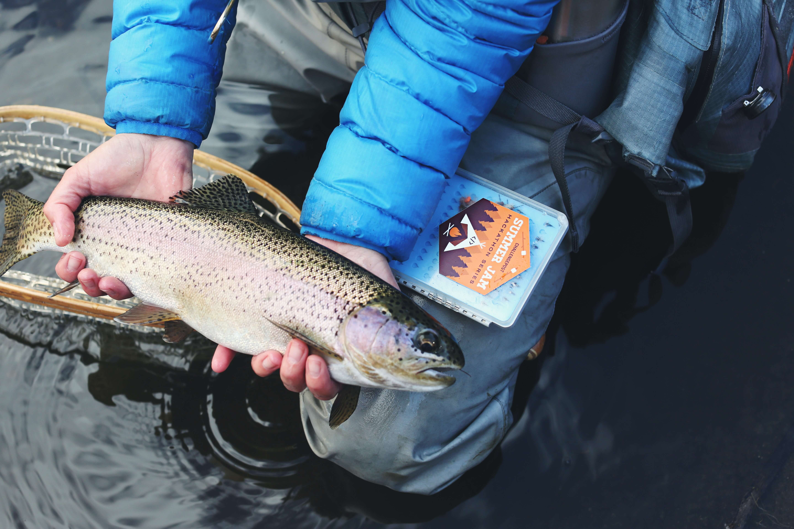
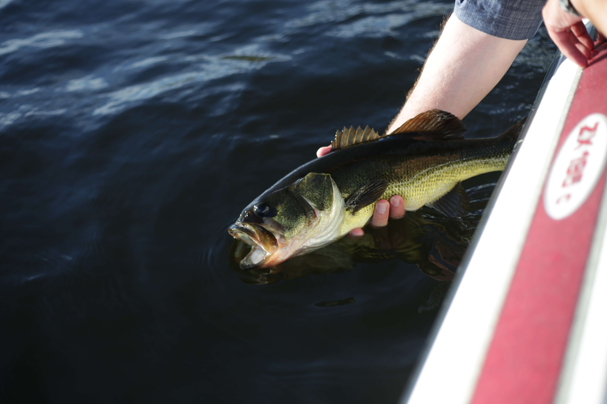

-
Relax.
-
Reel.
-
Repeat!

Welcome to the Seattle Reelers Fishing Group, where anglers of all skill levels can join to explore the stunning fishing spots that the Seattle region has to offer. Our members gather for fun fishing trips. Relax, unwind, and enjoy the thrill of the catch. As a bonus, our two business partners offer exclusive promotions to members.
-
"Hi, I'm Sarah, a bank manager who never thought she'd enjoy fishing until I joined the Seattle Reelers. Now, I can't wait for our next trip to the lake. It's so relaxing, and the thrill of catching a fish is addictive."
Sarah Corey, member since 2018.
-
"I never realized how much I loved fishing until I joined the Seattle Reelers. The group has introduced me to new techniques and locations, and I've caught some amazing fish. Plus, the camaraderie of the group is unbeatable. Highly recommend it!"
John Smith, member since 2020.
-

Reeling in the Rainbows
Congratulations to Jane Smith for catching this beautiful rainbow trout on Lake Washington! It was a great day out on the water even under challenging weather conditions. Keep up the great work, Jane!
-
Walleye Wizardry
Congrats to Tom Johnson for reeling in this gorgeous walleye on the Snohomish River! With its golden belly and medium size, this fish was the envy of the group. Great job, Tom!
-

Bass-tastic Catch
High fives to David Lee for reeling in this awesome bass on Puget Sound! This fish put up a good fight, but David's skills and determination paid off in the end. Way to go, David!
Our much appreciated partners!
Reel Deals Fishing Supply
Reel Deals Fishing Supply is the go-to spot for all your fishing gear needs in Seattle. As a special offer for Seattle Reelers members, you'll receive an exclusive 10% off coupon. Stock up on rods, lures, and more for your next fishing trip!
Salty Dog Shipwrights
Salty Dog Shipwrights is the premier boat repair and restoration company in Seattle, with over 45 years of experience on the water. Seattle Reelers members receive a special offer of 15% off on your first boat repair and maintenance services. Keep your vessel in top shape for your next fishing adventure with Salty Dog Shipwrights!